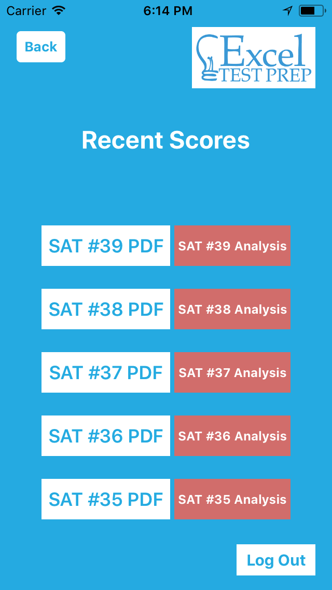
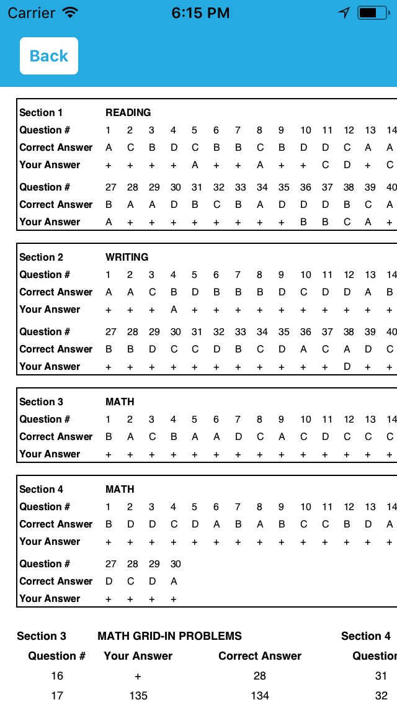
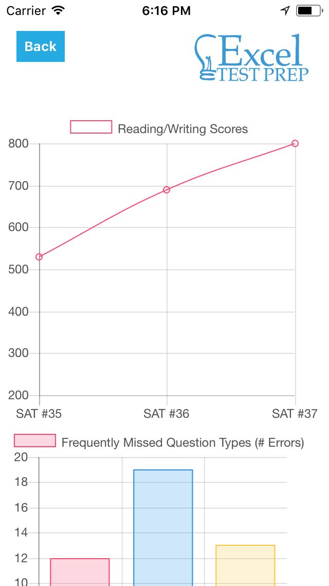
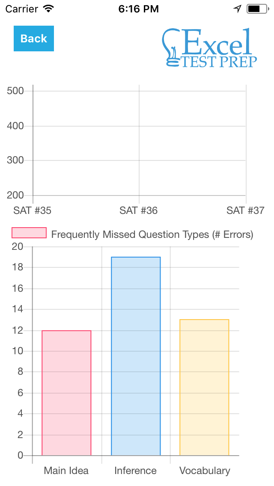

Excel Test Prep
In my part-time internship with Excel Test Prep, I was tasked with building an app to assist students with their learning experience for standardized tests. A group of 4 other interns and I decided to make an app that showed students their scores and analytics for all Excel practice tests they've taken. The app displays categorical trends through graphs to help students visualize the areas they are struggling in to better understand where they need improvement. The bulk of the app was coded in Swift, and the graphs were coded in Javascript. The documentation of the app can be found here, the code can be found here, and screenshots are shown below in sequence.



